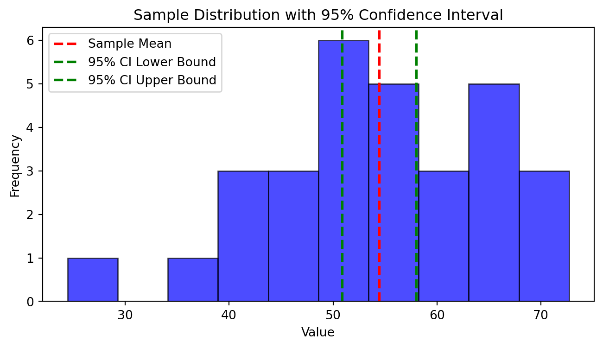

import numpy as np
import matplotlib.pyplot as plt
# Parameters
mu = 50 # true mean
sigma = 10 # known standard deviation
n = 30 # sample size
alpha = 0.05 # significance level
# Generate a sample
np.random.seed(0)
sample = np.random.normal(mu, sigma, n)
sample_mean = np.mean(sample)
# Calculate the confidence interval
z = 1.96 # z-value for 95% confidence
margin_of_error = z * (sigma / np.sqrt(n))
confidence_interval = (sample_mean - margin_of_error, sample_mean + margin_of_error)
# Plot the sample and confidence interval
plt.figure(figsize=(8, 4))
plt.hist(sample, bins=10, alpha=0.7, color='blue', edgecolor='black')
plt.axvline(sample_mean, color='red', linestyle='dashed', linewidth=2, label='Sample Mean')
plt.axvline(confidence_interval[0], color='green', linestyle='dashed', linewidth=2, label='95% CI Lower Bound')
plt.axvline(confidence_interval[1], color='green', linestyle='dashed', linewidth=2, label='95% CI Upper Bound')
plt.title('Sample Distribution with 95% Confidence Interval')
plt.xlabel('Value')
plt.ylabel('Frequency')
plt.legend()
plt.show()
print(f"Sample Mean: {sample_mean}")
print(f"95% Confidence Interval: {confidence_interval}")
Sample Mean: 54.42856447263174
95% Confidence Interval: (50.85011043026466, 58.007018514998826)